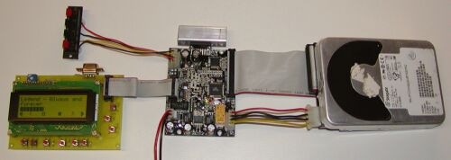
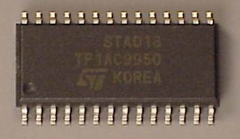
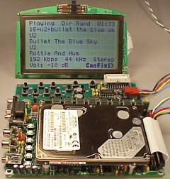
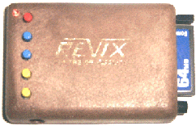
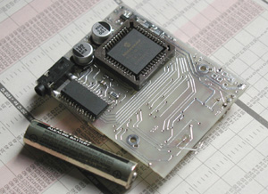
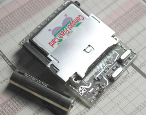
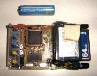
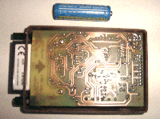

В рунете очень мало информации о MP3 плеерах, точнее о их схемах и различных самоделках. На буржуйских сайтах очень много различных статей и фотографий, некоторые фотографии я взял оттуда. По ходу я сначала расскажу о парочке MP3, далее остановлюсь на одном более или менее лёгком в сборке плеере.
Все MP3 (я имею в виду плееры, и в дальнейшем я их буду называть просто MP3) должны иметь носитель памяти - одни используют Flash-карту другие – винчестер. Вот пример плееров с IDE винчестером:

Это очень даже навороченный MP3, он имеет LCD, USB интерфейс, сделан на заводском декодере MP3, существует поддержка FAT32, играет MP2 и MP3 форматы. На LCD идёт передача инфы о песне (название/автор/размер). Поговорим о декодерах MP3. Буржуи используют Purchase STA013 MP3 Decoder стоимостью около 10$, можно ещё купить аналоговый - он стоит вдвое дешевле, смотря какой MP3 вы собрались делать.

Это и есть STA013 MP3 Decoder.
Все тонкости этого мини-декодера можно почитать на www.pjrc.com/tech/mp3/sta013.html
У нас можно найти декодеры фирмы Philips (вот например: UDA1380; Stereo audio coder-decoder for MD, CD and MP3) но больше всего мне понравился VS1001K он свободно продается в Москве, также, как у буржуев, на него километр документации.

Тут фота наикрутейшего MP3 - Laptop (2.5), модуль SIMM памяти на 32 мегабайта, Large LCD Display.
Playing Dir Rand 01:33 //название каталога и время 16-u2-bullet the blue sky //№ песни-группа-песня U2 Bullet The Blue Sky U2 Bottle And Hun 192 kbps 44 kHz Stereo //качество Vol: -10dB Confis13 //громкость
Прям WINAMP получается, вот только для чего SIMM модуль стоит, я так и не разобрался.
Наконец подошли к плееру который мне больше по душе своим размером, и простотой. Его преимущество в том что он поддерживает CompactFlash карты. На схеме видно, что плеер управляется микроконтроллером PIC16F877, и стоит столь мой любимый декодер VS1001K. Кнопки служат для:

Вышепоказанные плееры должны были иметь большой источник тока (так как использовался жесткий диск, и LCD), у Dreams MP3 (так его прозвали) нет ни LCD, ни винчестера, и питание происходит лишь от пальчиковой батарейки 3,3V
Фотогаллерея:
Dreams MP3 руками робота:


Dreams MP3 руками человека:

